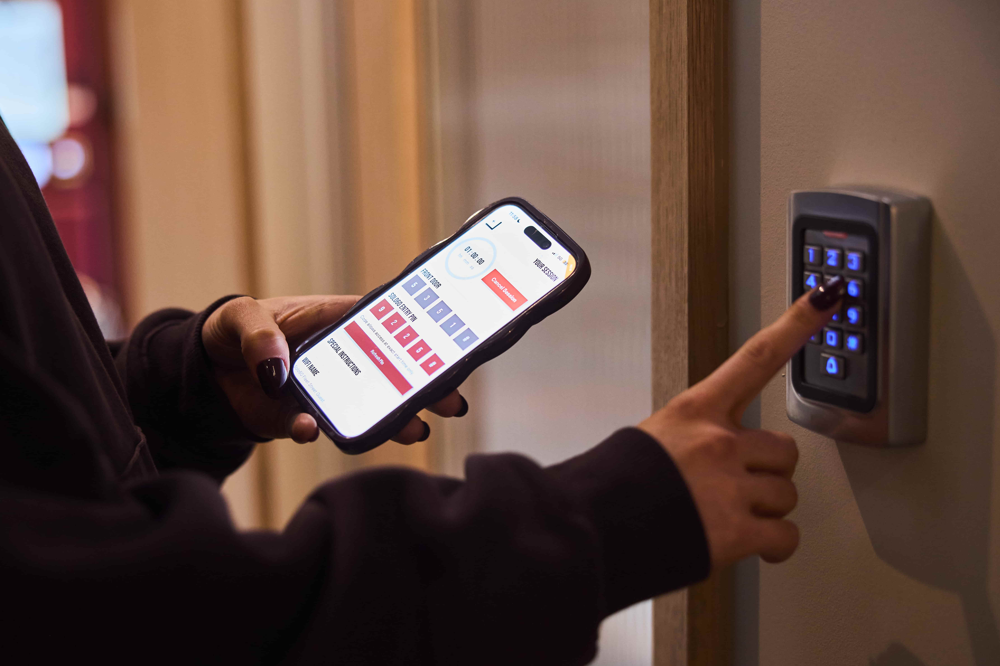
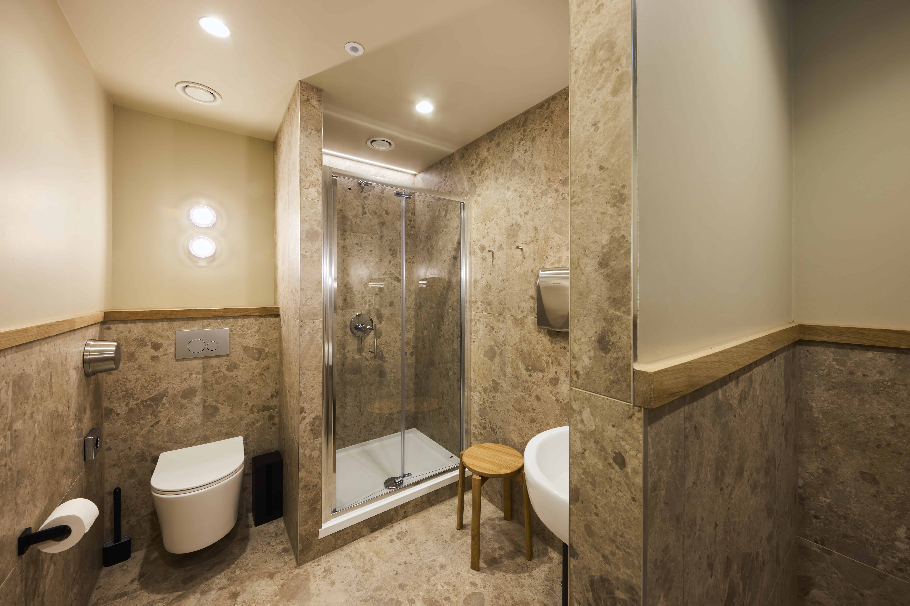
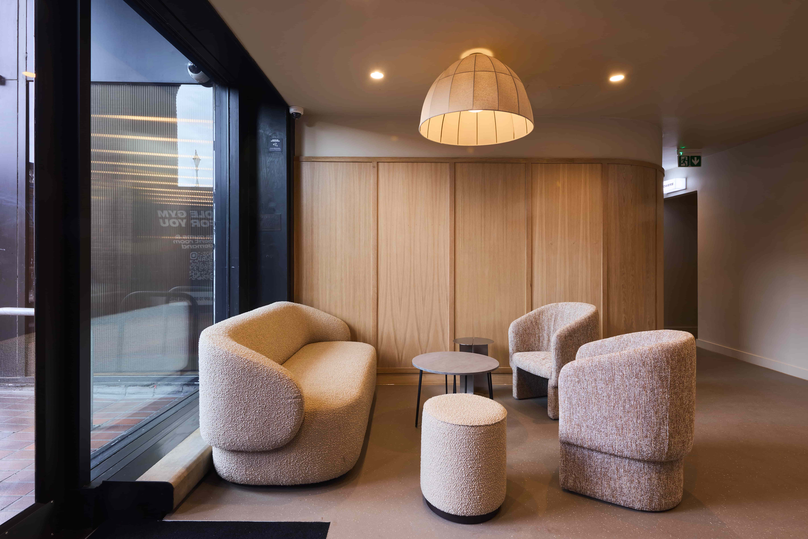

(N° 09) ProjectSolo Sixty · St Katharine's
SectorLeisure · Fitness
LocationTower Hill · E1
CompletedQ2 2026
Solo Sixty, St Katharine's.
N° 09 — E1
Photography · 2026
.jpg)
Alpine MI was appointed to deliver the complete fit-out of Solo Sixty's St Katharine's Dock location at Tower Hill E1 — a 2,099 sq ft boutique fitness studio set within an office building on one of London's most distinctive waterfront developments. The 9-week programme required precise coordination with building management and neighbouring office occupiers, with all works managed within controlled operating hours including weekends.
The brief demanded the same premium finish standard established across the Solo Sixty estate, delivered in a compressed programme within an occupied commercial environment. Alpine MI managed every trade from first fix through to final handover — coordinating M&E, bespoke joinery, specialist finishes and wet room installation in a single, structured sequence.
.jpg) Atrium · Main
Atrium · Main.jpg) Atrium · Detail
Atrium · Detail.jpg) Atrium · View
Atrium · View.jpg) Armoury · Studio
Armoury · Studio.jpg) Armoury · Interior
Armoury · Interior.jpg) Atrium II · View
Atrium II · ViewThe St Katharine's Dock location presented a unique setting — a waterfront office building with exceptional views and high footfall from surrounding residential and commercial tenants. The fit-out was designed and delivered to match Solo Sixty's premium brand benchmark, with bespoke joinery, specialist lighting, premium flooring and wet room facilities all completed within the 9-week programme.
.jpg) Recovery · Room
Recovery · Room
.jpg) Recovery · Facilities
Recovery · Facilities
The recovery and changing suite was specified to the same level as the main studio — premium tile selection, matte black hardware, consistent joinery language and integrated lighting throughout. The space was designed to support the full Solo Sixty member journey, from studio floor to recovery, with every transition point finished to the same exacting standard.
Works were managed within a live office building at St Katharine's Dock, with deliveries, access and trade coordination aligned to building management protocols. The 9-week programme incorporated weekday and weekend working, with strict noise and dust management controls in place throughout to protect neighbouring tenants. The scheme was handed over on programme, ready for Solo Sixty's opening day.
.jpg) Final · Handover
Final · Handover

Studio · Interior
Studio · Detail
Interior · FinishAtrium · ViewAtrium II · DetailArmoury II · View